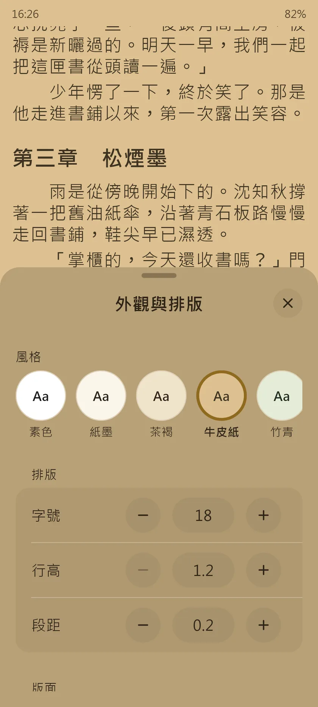
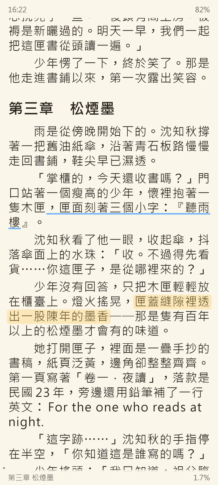
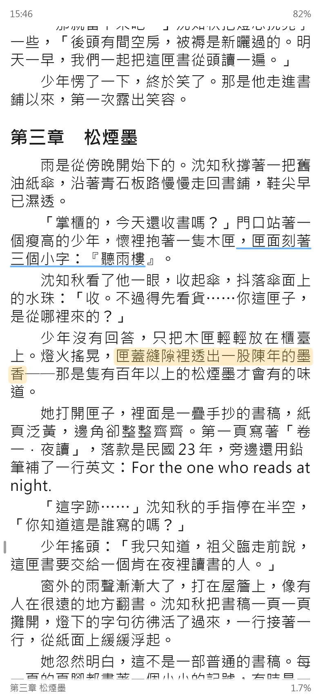
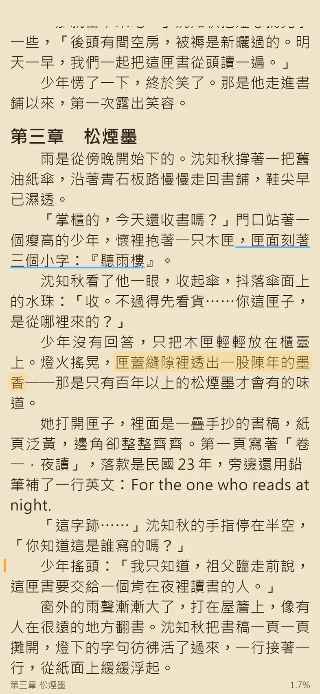
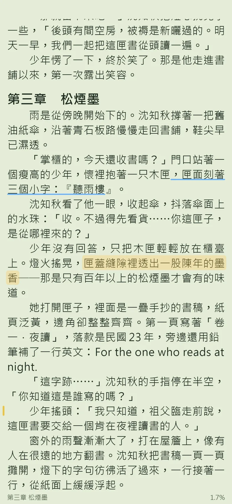
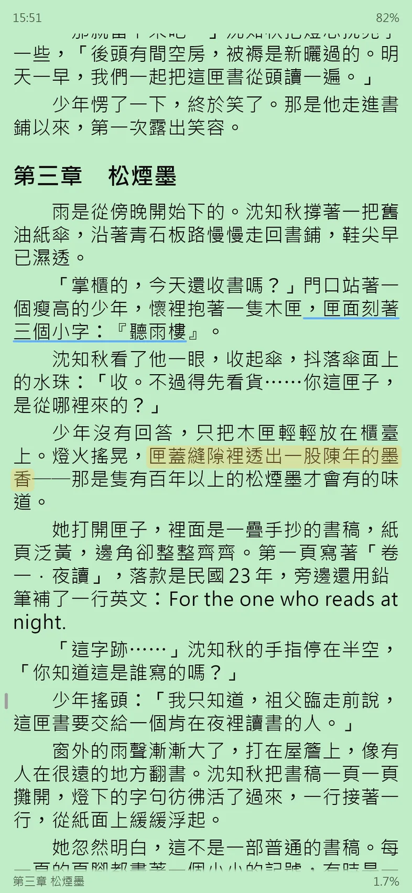
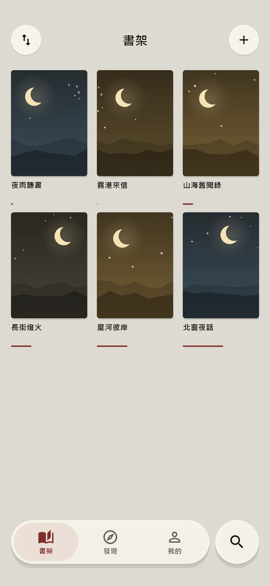
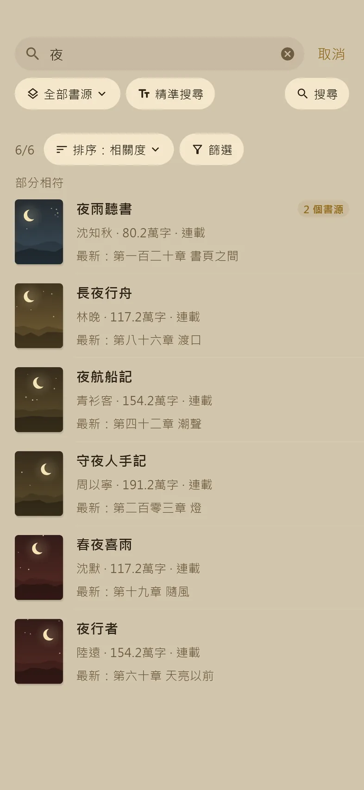
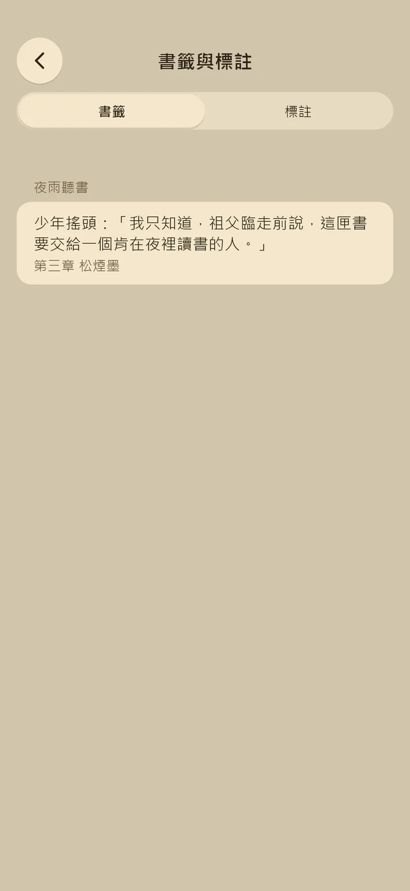

每個字都對齊字格
漢字一格、英數字補半格，左右兩緣切齊。標點不會落在行首行尾，「……」「——」不拆成兩行。字號、行高、每行字數都能調。


漢字一格、英數字補半格，左右兩緣切齊。標點不會落在行首行尾，「……」「——」不拆成兩行。字號、行高、每行字數都能調。





六種風格，淺色、深色各選一個，例如白天牛皮紙、晚上素色。深色預設純黑，OLED 螢幕的黑色部分不發光。

書架上的網路書會自己整本下載，新章節也跟著補上。搭車、出國、沒網路，照樣讀。

所有書源一起搜，繁體、簡體一起找，同一本書合成一筆。讀到一半換書源，進度停在同一章。


選一段字留書籤，或畫上底色、底線，旁邊寫一段備忘。換了書源也找得回同一句，標註可以匯出成 Markdown。
夜讀不附書源。安裝後到「我的 → 書源管理」匯入你自己的書源，格式和 Legado（閱讀）相容。沒有書源時，書架與搜尋都是空的。
Android 7.0 以上的 arm64 手機。App 會自己檢查新版。同一個版本另附未簽章的 iOS 安裝檔，要自行簽章安裝。